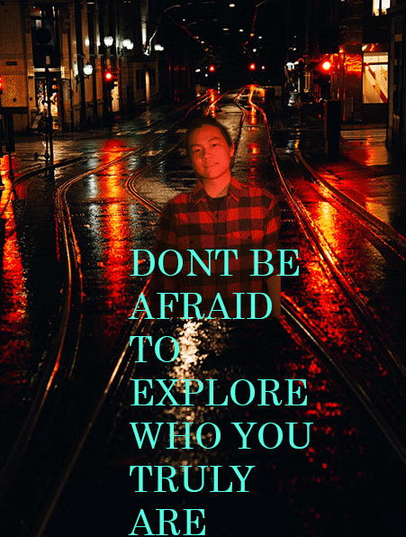

Darren Zhang's Biography
Personal info
My name is Darren Zhang and I am an advertising major. The reason why I chose this major is because I like an industry thats creative and everchanging.
I would love to work in the automotive side of advertising, whether thats promoting a new car or some features, I am all up for it. My end goal would be to work in Formula 1. I love to play videogames, and I am pretty good at some of them, with one of them being League of Legends as Ive hit Masters three times on different accounts. I also love to sing and act, but that has been put aside as of the moment due to all the chaotic events happening around the entertainment industry.
Outside of school, I love to play videogames, but I also LOVE to binge TV shows and movies. Some of my favorite movies include Spiderman: Across the Spiderverse, Oppenheimer, and Interstellar. I am also a pretty big musical theatre person as I find that often the most talented actors, singers, and dancers are in musical theatre.
A little more about my upbringing: I was born in San Jose, California, but my family migrated to Shanghai, China when I just turned 1 year old. I stayed there for 17 more years until college, and here I am now! I am excited for IST 263 and cannot wait to grasp the skills of creating and designing websites!
Personal info
You can find Darren in his apartment grinding the newest videogames including Starfield and Baldur's Gate!
Current Favorite Albums
- Snow Angel by Renee Rapp
- Oppenheimer by Ludwig Göransson
- Call Me If You Get Lost by Tyler, The Creator
- Tiny Things by Tiny Habits